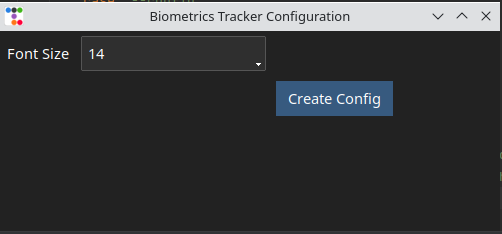

The first time you start the Biometrics Tracker application, you will be presented with the GUI shown below:
You will be asked to select the directory where the application's database file will be stored and specify the font size you would like to use for the application displays. A smaller font allows the display of more information, a larger font is easier to read. When you click the button the database file and configuration file will be created.
After you have done the initial configuration, the application will end. Subsequent times that you start the application, you will be presented with the display shown below. The top bar has several drop down menus that are organized in the following fashion.